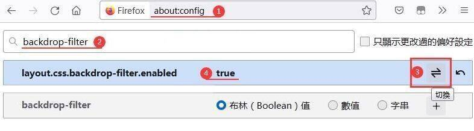
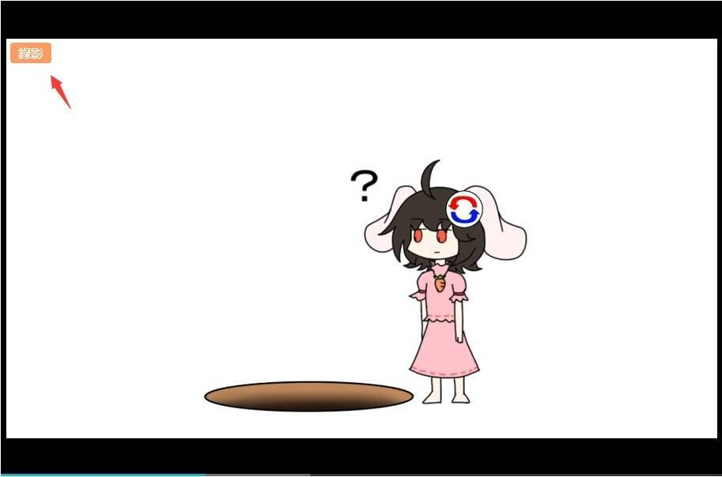
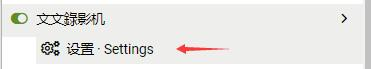
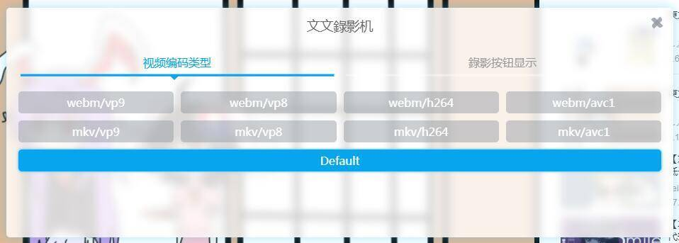

最新版本的 Chrome、Firefox 浏览器都兼容这个腳本
| API | Chrome | Firefox | 參考鏈接 | 必要性 |
|---|---|---|---|---|
| MediaRecorder | Version >= 49 | Version >= 29 | Can i use? | √ |
| CSS Backdrop Filter | Version >= 76 | Version >= 70 * | Can i use? | × |
你可以查看浏览器关于中的版本，參考腳本的兼容性
如果你使用 Firefox 浏览器，为了更好的体验請在实验性功能中啟用“backdrop-filter”选項，如下图示例
一般只需要将鼠標光標移動到視頻上，就会在視頻左上角出现「錄影」按鈕
点击「錄影」按鈕后，按照弹出的提示框选择开始錄影即可
平均每 5 秒約需要 2.3 MB 左右，根据視頻編碼类型有所差异，长時間錄像建议可用内存在 4 GB 以上
在錄影過程中可以隨時按「停止」按鈕停止錄影
一旦停止錄影按鈕会立刻変为「下载錄影」按鈕，会一直存在，你可以隨時下載錄影，或者取消下載并重新开始錄影
通常情况下，錄影按鈕会与視頻在同一层上，但有時候在視頻上一层会有其它可能看不见的遮罩层，这会影响錄影按鈕的操作
如果发生了这种情况，就不得不考虑它出现了的事实，這時候可以通過腳本的設置改変按鈕显示的方式和层次来解决这个问題
在腳本設置中可以改変錄影視頻的編碼类型，視頻編碼类型会根据浏览器已支持的类型给出可以选择的选項，不支持的类型将不会出現
所有編碼类型最终都会保存为 webm 格式，因为这只会影响編碼方式，并不会改変視頻的格式
因为腳本会在页面加載完成的 5 秒内尝試查找网页上的視頻，如果超过 5 秒找不到視頻，腳本就会停止查找
而有些网页的視頻在播放之前只会显示一张預览图，只有点击播放的时候才会出现視頻
还有的時候是因为在腳本設置中选错了按鈕显示的层次，导致按鈕出現在和視頻有一段距离的外面
如果发生了这种情况，就不得不考虑它出现了的事实，這時候可以通過腳本的設置改変按鈕显示的方式和层次来解决这个问題
一般暂停的原因有这几种情况：
因为錄影是将視頻軌和音頻軌分开錄製再合并流进行处理，一些网页視頻可能因視頻軌和音頻軌有碼率差异而造成錄影性能影响
如果发生了这种情况，就不得不考虑它出现了的事实，建议使用其它方法錄製這种視頻